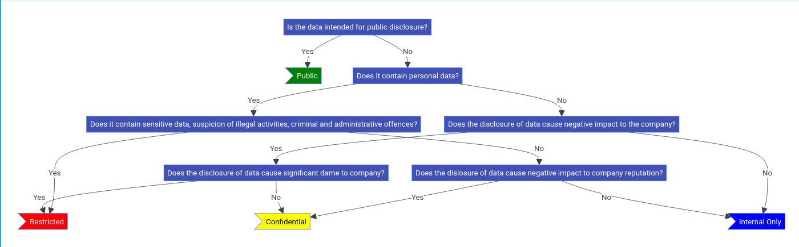
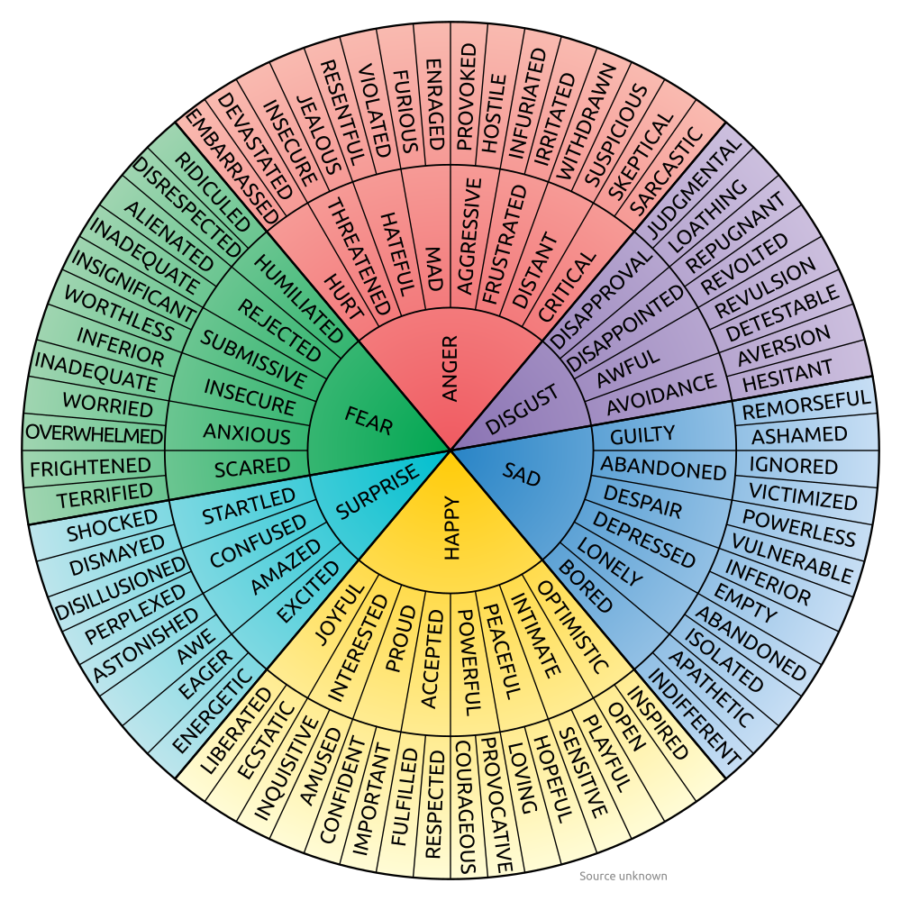

Como criar um Playbook para resposta a incidentes?
1. Defina metas e prioridades organizacionais
Identifique os ativos, sistemas e processos críticos que necessitam de proteção. Considere o impacto de incidentes sobre essas áreas para priorizar as respostas adequadamente. Alinhe as metas e objetivos de segurança ao apetite de risco da organização e às exigências de conformidade regulatória.
Documente os objetivos claramente no manual, incluindo:
Proteção da integridade e continuidade operacional
Mitigação de danos financeiros, reputacionais e legais
Cumprimento de normas e padrões de segurança
2. Estabeleça funções e responsabilidades
Determine as responsabilidades específicas de cada membro da equipe de resposta a incidentes, além de outras partes envolvidas.
Manipuladores de incidentes internos: profissionais técnicos que identificam, analisam e mitigam incidentes.
Terceiros especializados: consultores externos ou prestadores de serviços que auxiliam na investigação e resposta.
Equipes jurídicas e de comunicação: responsáveis pela gestão de impactos legais e pela comunicação com partes interessadas internas e externas.
Tomadores de decisão: alta gestão ou C-suite para aprovar ações críticas e alocação de recursos.
Inclua planos de comunicação e garanta treinamento para todos os envolvidos, de modo que estejam preparados para responder com eficiência a crises reais.
3. Realize uma avaliação de risco
Conduza uma análise abrangente para identificar ameaças específicas e avaliar vulnerabilidades no ambiente organizacional.
Analise a probabilidade de ocorrência e o impacto potencial de diferentes incidentes.
Categorize os riscos de acordo com sua gravidade para priorizar a alocação de recursos.
Considere ameaças internas (acessos indevidos) e externas (malware, ataques DDoS, violações de dados).
Use os resultados da avaliação para criar cenários de resposta e desenvolver planos específicos para incidentes mais prováveis ou críticos.
4. Desenvolva procedimentos detalhados
Crie processos bem definidos para cada fase de resposta a incidentes. O manual deve incluir:
Detecção e análise
Métodos para identificar e confirmar incidentes.
Contenção
Estratégias para limitar danos e preservar evidências.
Erradicação
Ações para eliminar a causa raiz do incidente.
Recuperação
Processos para restaurar sistemas afetados com segurança.
Pós-incidente
Análise de lições aprendidas e ajustes para prevenir futuros incidentes.
Especifique as ferramentas, os passos técnicos e as comunicações necessárias para cada fase. Certifique-se de que as instruções sejam claras e práticas para a equipe técnica e os gestores.
5. Planeje o envolvimento de terceiros e relatórios
Inclua diretrizes para o uso de suporte externo, como agências de aplicação da lei, consultorias ou serviços de resposta a incidentes.
Defina critérios claros para acionar terceiros (ex.: incidentes de alta gravidade ou violações de dados regulamentadas).
Crie um processo formal de relatório para partes internas, reguladores e indivíduos afetados, garantindo comunicação ágil e precisa.
6. Teste, treine e refine continuamente
Implemente exercícios de simulação para validar o manual e identificar lacunas. Esses testes ajudam a melhorar a preparação da equipe e a eficácia das respostas.
Realize treinamentos regulares para garantir que todos compreendam suas funções e possam executá-las sob pressão.
Ajuste o manual com base em lições aprendidas durante simulações e incidentes reais.
Atualize periodicamente o conteúdo para refletir mudanças no cenário de ameaças e nos requisitos regulatórios.
Atenção!
Um manual bem estruturado e testado é a base para uma resposta eficaz e alinhada ao NIST.
Ciclo de Vida da Gestão de Dados
O ciclo de vida da gestão de dados é um processo abrangente que contempla todas as etapas pelas quais os dados atravessam, desde sua coleta inicial até sua destruição ou reutilização. Em cada uma dessas etapas, existem desafios críticos relacionados à cibersegurança, que demandam soluções específicas para garantir a proteção, a integridade e o valor estratégico dos dados.
Além disso, questões transversais como segurança, conformidade legal, padrões de qualidade e percepção pública permeiam todas as fases do ciclo. Abaixo, exploramos cada etapa em profundidade, destacando os aspectos críticos no contexto da cibersegurança.
1. Coletar
Nesta fase inicial, os dados são adquiridos por meio de técnicas e métodos que podem variar dependendo do setor ou da aplicação. No âmbito da cibersegurança, isso inclui a coleta de logs de sistemas, dados de redes, eventos de segurança e informações provenientes de sensores ou dispositivos IoT.
Os profissionais de cibersegurança precisam garantir que os dados sejam coletados de maneira segura e confiável, prevenindo interferências externas. A proteção dos canais de transmissão é crítica, utilizando protocolos como TLS para impedir ataques de interceptação. Além disso, políticas claras sobre quais dados são coletados e por que são essenciais para reduzir riscos desnecessários.
2. Processar
O processamento é a etapa onde os dados coletados são organizados, limpos e analisados. No contexto de cibersegurança, essa fase é fundamental para identificar padrões de comportamento, detectar anomalias e produzir insights acionáveis.
A integridade das operações realizadas durante o processamento deve ser assegurada por meio de controles robustos, como ambientes isolados e técnicas de monitoramento contínuo. Isso evita a inserção de dados maliciosos ou a manipulação de informações críticas. Profissionais devem também usar algoritmos que garantam rastreabilidade e integridade ao longo do processo.
3. Armazenar e Proteger
Depois de processados, os dados são armazenados para uso futuro, seja em bancos de dados locais, na nuvem ou em sistemas distribuídos. Esta etapa exige um enfoque rigoroso em segurança, já que dados armazenados são frequentemente alvos de ataques cibernéticos.
Criptografia de dados em repouso, políticas de retenção e backups regulares são práticas essenciais. Além disso, autenticação multifator e segmentação de acesso devem ser aplicadas para limitar quem pode acessar os sistemas de armazenamento. Profissionais também devem implementar auditorias regulares para identificar e corrigir vulnerabilidades rapidamente.
4. Usar
A fase de utilização dos dados é onde eles geram valor, seja por meio de análises ou para guiar decisões. Em cibersegurança, isso inclui atividades como monitoramento de ameaças e resposta a incidentes.
Garantir o uso apropriado dos dados exige a aplicação de controles rigorosos, como logs de auditoria detalhados e segregação de funções. Além disso, ferramentas de mascaramento de dados podem ser implementadas para proteger informações sensíveis durante o uso, reduzindo o risco de exposição indevida.
5. Compartilhar e Comunicar
Compartilhar dados é essencial para promover a colaboração, como na troca de informações sobre ameaças (Threat Intelligence) entre equipes de cibersegurança ou organizações.
Para profissionais da área, proteger dados durante o compartilhamento requer o uso de criptografia ponta a ponta e a definição de acordos claros sobre como as informações podem ser usadas. Auditorias regulares e ferramentas de monitoramento ajudam a garantir que os dados sejam utilizados apenas conforme permitido.
6. Arquivar
Nesta etapa, dados que não são mais necessários para uso ativo, mas que possuem valor estratégico ou legal, são arquivados. Isso é comum em casos onde é necessário manter registros para auditorias ou para atender a requisitos regulatórios.
A proteção de dados arquivados é tão crítica quanto a de dados ativos. Técnicas como criptografia de longo prazo e controles de acesso baseados em níveis hierárquicos garantem que apenas indivíduos autorizados possam acessar essas informações. A redundância em sistemas de arquivamento também é essencial para prevenir perdas.
7. Reutilizar e Reaproveitar ou Destruir
Os dados podem ser reaproveitados para novos propósitos, como análises adicionais, ou destruídos de forma segura ao atingirem o fim de sua utilidade.
A reutilização de dados exige conformidade com regulamentos de privacidade, assegurando que os novos usos sejam compatíveis com os propósitos originais da coleta. Para destruição, profissionais de cibersegurança devem empregar métodos certificados, como desmagnetização ou sobrescrita, para garantir que os dados sejam eliminados de maneira irrecuperável.
Questões Transversais no Ciclo de Vida dos Dados
As questões transversais são aspectos fundamentais que permeiam todas as etapas do ciclo de vida da gestão de dados. No contexto da cibersegurança, essas questões são amplamente interconectadas e podem determinar o sucesso ou fracasso das práticas de segurança de dados. A seguir, exploramos essas questões de maneira aprofundada:
Leis e Políticas de Privacidade
Regulamentações como a LGPD, o GDPR e outras legislações globais são fundamentais para estabelecer limites sobre como os dados podem ser coletados, processados, armazenados e compartilhados. Organizações precisam integrar essas regulamentações em suas operações para evitar sanções legais e proteger os direitos dos indivíduos. Por exemplo, profissionais devem implementar políticas claras de consentimento, garantindo que o uso dos dados seja restrito aos fins declarados e legais.
Segurança
Envolve o uso de tecnologias, processos e práticas que protejam os dados contra acessos não autorizados, ataques cibernéticos e outros riscos. Estratégias como criptografia, autenticação multifator e arquitetura de Zero Trust são pilares fundamentais. A aplicação contínua dessas práticas assegura que os dados estejam protegidos independentemente do ambiente onde se encontram.
Propriedade
É crucial definir claramente quem detém os direitos sobre os dados e suas responsabilidades. Isso garante a atribuição adequada de responsabilidades em caso de violações ou incidentes. Um exemplo seria estabelecer contratos claros em parcerias de outsourcing, delimitando as obrigações de cada parte no gerenciamento e proteção dos dados.
Propósito e Valor
Avaliar continuamente o propósito dos dados e seu valor para a organização é essencial. Isso inclui determinar quais dados devem ser mantidos e quais podem ser descartados para reduzir riscos e custos. Revisões regulares de inventários de dados ajudam a identificar informações obsoletas ou redundantes, permitindo decisões estratégicas.
Responsabilidade Legal
Inclui conformidade com regulamentações e normativas aplicáveis, garantindo que as práticas de gestão de dados estejam alinhadas às obrigações legais. Isso abrange desde a coleta até a destruição, incluindo notificações obrigatórias em casos de vazamentos. Por exemplo, profissionais devem criar planos detalhados de resposta a incidentes que atendam a requisitos legais específicos.
Padrões e Qualidade
Estabelecer padrões claros para a qualidade e integridade dos dados é fundamental para evitar erros que possam comprometer decisões baseadas em dados. Ferramentas automatizadas de validação e consistência são recomendadas para assegurar que os dados sejam precisos e confiáveis em todas as etapas do ciclo.
Percepção Pública
A confiança do público é um ativo crítico em um ambiente onde violações de dados são cada vez mais comuns. Manter práticas transparentes e éticas de gestão de dados fortalece a reputação organizacional. Isso pode incluir a publicação de relatórios anuais destacando esforços de proteção e melhorias na segurança de dados.
Classificação dos Dados
A classificação de dados é uma das etapas mais críticas no gerenciamento da segurança da informação. Ela não se resume apenas a etiquetar dados como "confidenciais" ou "públicos", mas sim a estabelecer um processo estruturado para proteger os dados com base em sua sensibilidade e importância. Quando implementada corretamente, a classificação de dados ajuda as organizações a minimizar riscos, atender a regulamentações e garantir a proteção de informações críticas.
Definindo a Finalidade da Classificação de Dados
Antes de iniciar o processo de classificação, é essencial compreender as finalidades que esse processo deve atender. A classificação de dados não é uma tarefa aleatória; ela é guiada por objetivos específicos que envolvem tanto aspectos de segurança quanto conformidade regulatória.
Uma das principais finalidades é garantir que a organização esteja em conformidade com regulamentações de privacidade, como o GDPR, a LGPD ou a HIPAA, que exigem o tratamento específico de informações sensíveis. Outro objetivo importante é a proteção de dados confidenciais contra acessos não autorizados, prevenindo vazamentos que possam resultar em danos financeiros, legais ou reputacionais.
Além disso, a classificação ajuda na gestão de riscos, permitindo que a organização aloque recursos e controles de forma mais eficaz, além de fornecer diretrizes claras sobre como manusear dados em diferentes contextos, de acordo com sua sensibilidade.
Estabelecendo o Âmbito do Ambiente de Dados
Uma vez definidos os objetivos da classificação, o próximo passo é determinar o escopo dos dados a serem classificados. O escopo envolve a identificação de todos os pontos onde os dados estão armazenados, processados ou transmitidos dentro da organização.
Isso pode incluir dados armazenados em servidores locais, dispositivos móveis, bancos de dados na nuvem, e até mesmo dados em trânsito por meio de redes corporativas ou serviços externos. Além disso, a classificação deve considerar tanto dados estruturados, como tabelas de banco de dados, quanto dados não estruturados, como documentos de texto, e-mails ou arquivos multimídia.
A definição do escopo permite uma visão holística do ciclo de vida dos dados, abrangendo todas as fontes e destinos de informações dentro da organização.
Descobrindo Todos os Dados no Escopo
Para classificar efetivamente os dados, é necessário primeiro identificá-los. Ferramentas de descoberta de dados (data discovery) são fundamentais nesse processo, pois permitem que as organizações mapeiem e identifiquem dados sensíveis em seus sistemas, muitas vezes de forma automatizada.
As ferramentas de descoberta são capazes de detectar dados que possam estar dispersos em locais inesperados, como backups antigos ou dispositivos de armazenamento não monitorados. Além disso, auditorias contínuas dos sistemas existentes são essenciais para garantir que todos os dados relevantes sejam incluídos no escopo da classificação.
É importante envolver todas as partes interessadas, incluindo equipes de TI, de segurança da informação e de conformidade, para garantir que o ciclo de vida dos dados seja documentado corretamente e que a classificação seja feita de maneira abrangente.
Definindo Níveis de Sensibilidade e Classificando os Dados
Após a identificação dos dados, o próximo passo é classificá-los com base em sua sensibilidade. Os dados podem ser classificados em diferentes níveis, dependendo do impacto que sua divulgação não autorizada pode causar.
Os dados "Públicos" são acessados sem restrições, como comunicados de imprensa e materiais de marketing.
Os dados "Apenas Internos" são dados corporativos não sensíveis e que podem ser acessados por funcionários dentro da organização, mas não devem ser compartilhados externamente.
Os dados "Confidenciais" exigem um nível maior de proteção, sendo acessíveis apenas a equipes ou indivíduos autorizados.
Por fim, os dados "Restritos" são os mais sensíveis, e sua exposição pode causar danos severos à organização, incluindo impactos financeiros, legais ou à reputação.
Modelos do DoD (Department of Defense)
Categoria
Cor
Definição
Exemplos de Dados
Não Classificado
Dados aprovados para divulgação pública.
Comunicados de imprensa, material de marketing.
Inform. Controlada
Dados não classificados, mas que requerem proteção de divulgação.
Guias internos, manuais de usuários.
Confidencial
Dados cuja exposição pode causar danos à segurança.
Informações de autenticidade, documentos sensíveis internos.
Secreto
Dados cuja exposição pode causar danos graves à segurança.
Planos militares, sistemas de armas.
Ultrasecreto
Dados cuja exposição pode causar danos excepcionais à segurança.
Atividades de inteligência, criptografia, informações sobre armas de destruição em massa.
Outros Modelos
Categoria
Cor
Definição
Exemplos de Dados
Público
Dados aprovados para divulgação pública.
Comunicados de imprensa, materiais publicitários.
Apenas Interno
Dados empresariais não sensíveis usados internamente.
Guias internos, políticas empresariais.
Confidencial
Dados sensíveis restritos a determinados funcionários ou equipes.
Dados bancários, informações biométricas, segredos comerciais.
Restrito
Dados altamente sensíveis com impacto severo em caso de vazamento.
Dados financeiros confidenciais, informações pessoais sensíveis, registros médicos.
Infraestrutura Crítica
Informações sobre segurança de instalações essenciais, vulnerabilidades em sistemas de energia e segurança física de infraestruturas críticas.
Defesa
Dados sobre segurança de defesa, informações de propulsão nuclear e inteligência de defesa nacional.
Controle de Exportação
Regulamentações sobre exportação de tecnologia sensível e pesquisa controlada internacionalmente.
Financeiro
Dados financeiros críticos, incluindo segurança de transações e informações de supervisão financeira.
Inteligência
Informações sobre inteligência operacional, segurança de dados internos e registros financeiros de inteligência.
Aplicação da Lei
Dados sobre investigações, segurança de comunicações e informações de vigilância e aplicação da lei.
Legal
Informações sobre procedimentos legais, proteção de testemunhas e privacidade em processos judiciais.
Recursos Naturais e Culturais
Proteção de recursos arqueológicos, propriedades históricas e gerenciamento de parques nacionais.
Nuclear
Segurança de materiais nucleares, informações sobre salvaguardas e segurança operacional nuclear.
Privacidade
Proteção de dados pessoais, informações de saúde e registros de privacidade sensíveis.
Aquisição e Compras
Segurança em aquisições, informações proprietárias e proteção de contratos sensíveis.
Estatísticas
Segurança de dados estatísticos, incluindo censos e pesquisas econômicas.
Impostos
Proteção de informações fiscais e segurança de dados tributários confidenciais.
Transporte
Segurança em registros de transporte e proteção de informações de segurança ferroviária.
Boas Práticas para Implementação
Educação e Treinamento
Invista em programas contínuos de capacitação para assegurar que todos os colaboradores compreendam a relevância da classificação de dados e saibam como manipulá-los de maneira segura e eficiente. Treinamentos regulares promovem a conscientização sobre políticas, procedimentos e possíveis riscos associados ao manuseio inadequado de informações.
Auditorias Regulares
Estabeleça um cronograma de auditorias periódicas para verificar se as práticas de classificação estão sendo corretamente aplicadas e se os dados estão protegidos de acordo com suas categorias de sensibilidade. Auditorias ajudam a identificar lacunas, corrigir desvios e fortalecer controles.
Automatização
Adote ferramentas de automação para otimizar o processo de classificação de dados, reduzindo o tempo necessário para identificar e proteger informações críticas. Soluções automatizadas minimizam erros humanos, melhoram a eficiência e permitem uma adaptação mais rápida a mudanças no ambiente de dados.
Revisão Contínua
Realize revisões frequentes nos níveis de classificação e nas políticas associadas, especialmente quando ocorrerem mudanças nas regulamentações, na estrutura organizacional ou no volume e tipo de dados armazenados. Uma abordagem iterativa garante que a classificação permaneça alinhada com as necessidades do negócio e as exigências legais.
Ao implementar essas práticas, as organizações podem criar um processo de classificação de dados robusto, que protege informações de maneira eficaz, assegura conformidade regulatória e reduz a exposição a riscos de segurança.

Técnicas, Táticas e Procedimentos (TTP) - Blue Team
As Técnicas, Táticas e Procedimentos (TTP) são elementos essenciais na construção de estratégias de defesa cibernética eficazes. Esses conceitos formam a base para entender o comportamento adversário, planejar respostas rápidas e implementar medidas de proteção robustas. Compreender e aplicar TTPs permite que as organizações estejam melhor preparadas para enfrentar um cenário de ameaças cibernéticas em constante evolução.
Este guia detalha como alinhar TTPs às práticas modernas de segurança, abrangendo as fases de prevenção, detecção, resposta e recuperação, garantindo uma abordagem integrada e resiliente.
1. Táticas de Defesa: Prevenção e Monitoramento
A defesa cibernética eficaz começa com uma abordagem preventiva, complementada por um monitoramento contínuo. Essas práticas são projetadas para minimizar as chances de sucesso de um ataque e detectar atividades suspeitas antes que possam causar danos significativos.
1.1 Prevenção Proativa
A prevenção proativa envolve a adoção de controles e práticas que dificultem a exploração de vulnerabilidades, tais como:
Firewalls Avançados
Configuração de NGFWs para inspeção profunda de pacotes e detecção de tráfego malicioso.
Gestão de Vulnerabilidades
Ciclos regulares de varredura e correção priorizada com base em análises de risco.
Endurecimento de Infraestrutura
Aplicação de políticas de segurança robustas, como desativação de serviços desnecessários.
Educação e Conscientização
Treinamento contínuo para identificar e evitar armadilhas comuns, como phishing e engenharia social.
1.2 Monitoramento Contínuo
Ferramentas de monitoramento fornecem insights críticos sobre atividades anômalas. Exemplos incluem:
SIEM
Agregação e análise centralizada de logs para identificar padrões suspeitos.
UEBA
Monitoramento comportamental avançado que identifica desvios no uso esperado de sistemas.
Feeds de Inteligência de Ameaças
Atualizações em tempo real sobre campanhas de ataque conhecidas.
SOC
Equipe de segurança operacional responsável por monitorar e responder a incidentes de segurança.
2. Táticas de Mitigação e Resposta
Quando uma ameaça é detectada, a resposta deve ser ágil e eficiente para minimizar danos. Isso inclui tanto a contenção do ataque quanto a mitigação de seus impactos.
2.1 Resposta a Incidentes
Análise Forense
Determinação da origem do ataque e documentação para fins legais ou de aprendizagem.
Planos de Resposta
Procedimentos documentados para lidar com ameaças específicas, como ransomware.
Comunicação Coordenada
Estratégias claras para disseminar informações de forma eficaz durante incidentes.
Revisão e Melhoria
Análise contínua de processos e procedimentos para identificar oportunidades de melhoria.
2.2 Contenção e Mitigação
Isolamento de Sistemas
Quarentena de dispositivos para impedir a propagação de ataques.
Honeypots
Criação de armadilhas para enganar atacantes e estudar seus comportamentos.
Reconfiguração de Redes
Mudanças dinâmicas para limitar movimentos laterais dentro da infraestrutura.
Implantação de HRS
Implementação de softwares de segurança para responder e conter ataques de forma autonoma.
3. Táticas de Resiliência e Recuperação
Após um incidente, a recuperação rápida é essencial. Estratégias eficazes garantem a restauração de sistemas críticos e a continuidade operacional.
3.1 Planos de Recuperação
Backups Seguros
Armazenamento e teste regular de backups para rápida restauração.
DRP
Planos de Recuperação de Desastres que priorizam serviços essenciais.
3.2 Aprendizado Pós-Incidente
Análise Retrospectiva
Identificação de pontos de falha e melhorias futuras.
Políticas Revisitadas
Refinamento contínuo de controles com base nas lições aprendidas.
4. Comunicação e Colaboração
A coordenação entre equipes internas e externas é fundamental para a eficácia das TTPs, especialmente durante crises.
4.1 Ferramentas de Colaboração:
Plataformas Seguras
Aplicativos que garantem comunicações criptografadas.
Repositórios Compartilhados
Bases de dados centralizadas com controle rigoroso de acessos.
Técnicas, Táticas e Procedimentos (TTP) - Red Team
No campo da segurança cibernética, as Técnicas, Táticas e Procedimentos (TTPs) representam as metodologias específicas empregadas por adversários (e também defensores) para conduzir operações cibernéticas. Esses conceitos não apenas descrevem as ações realizadas, mas também os métodos e ferramentas utilizadas para atingir objetivos específicos. Com a evolução constante das tecnologias e técnicas de defesa, os adversários têm refinado suas TTPs para contornar novas barreiras, criando um cenário onde a criatividade e a sofisticação se tornam marcas registradas dos ataques modernos.
1. Táticas de Ataque - Fase de Reconhecimento e Coleta de Informações
Coleta de Informações (Reconnaissance)
O reconhecimento, ou recon, é a base de qualquer operação de ataque bem-sucedida. Nessa fase, o atacante reúne informações detalhadas sobre o alvo para identificar potenciais pontos de entrada. Esta etapa envolve tanto técnicas passivas (sem interação direta com o alvo) quanto ativas (interação direta com os sistemas do alvo). Principais táticas incluem:
Mapeamento de subdomínios e exploração de DNS
Coleta de dados via OSINT (Open Source Intelligence)
Fingerprinting de sistemas para identificar versões de software e hardware
Identificação de padrões de tráfego e de configurações de rede
2. Táticas de Exploração - Execução de Código e Exploração de Vulnerabilidades
Execução de Código Remoto (Remote Code Execution - RCE)
A execução remota de código (RCE) é uma técnica crítica que permite aos adversários comprometer um sistema alvo. Essa abordagem aproveita vulnerabilidades em software para injetar e executar código malicioso, potencialmente concedendo controle total sobre o sistema. Exemplos incluem:
Explorações de buffer overflow
Injeções de SQL e exploração de Vulnerabilidades Web
Desenvolvimento de Exploits Zero-Day personalizados
3. Táticas de Evasão e Persistência
Evasão de Detecção
Atacantes frequentemente desenvolvem técnicas sofisticadas para evitar a detecção por sistemas de defesa. Isso inclui ofuscar o tráfego, esconder cargas úteis e aproveitar ferramentas legítimas do sistema operacional para reduzir a visibilidade de suas ações. Exemplos incluem:
Uso de shellcodes criptografados
Abordagens Living off the Land (LotL), como PowerShell e WMI
Manipulação de configurações de firewalls e bypass de WAFs
4. Táticas de Exfiltração de Dados e Canais Encobertos
Exfiltração de Dados
A exfiltração de dados consiste em transferir informações sensíveis de sistemas comprometidos para ambientes controlados pelos atacantes, frequentemente utilizando métodos difíceis de detectar. As técnicas incluem:
Túnel DNS para comunicação e exfiltração
Transferências via HTTPS para ocultar dados no tráfego legítimo
Utilização de serviços de armazenamento em nuvem como intermediários
5. Táticas de Escalada de Privilégios e Movimentação Lateral
Escalada de Privilégios
Escalar privilégios é essencial para os atacantes obterem controle administrativo sobre sistemas ou redes. As técnicas mais comuns incluem:
Exploração de vulnerabilidades locais para obter permissões elevadas
Uso de ferramentas como Mimikatz para extrair credenciais
Movimentação Lateral
A movimentação lateral permite que os atacantes explorem outros sistemas dentro da rede comprometida, visando alcançar ativos críticos. Métodos incluem:
Pass-the-Hash (PTH) para reutilização de credenciais roubadas
Exploração de serviços vulneráveis em outros sistemas da rede
6. Defesa - Resposta a Incidentes e Mitigação
Respostas Proativas e Reativas
No contexto defensivo, a resposta eficaz a TTPs envolve tanto medidas proativas quanto reativas. Algumas das principais práticas incluem:
Detecção em tempo real baseada em anomalias
Análise forense detalhada e ações pós-incidente
Implementação de playbooks robustos para resposta a incidentes
Simulações regulares de ataques para fortalecer a postura defensiva
Fatores Humanos
Os fatores humanos desempenham um papel central na segurança da informação, pois são os indivíduos, suas ações e comportamentos que frequentemente determinam o sucesso ou fracasso das medidas de proteção cibernética. Esses fatores abrangem diversos aspectos, como ética, integridade, práticas organizacionais e estados emocionais dos funcionários.
Proteção de Dados e Privacidade
O foco está na proteção das informações pessoais e corporativas, tanto no ambiente organizacional quanto na vida privada dos indivíduos. Isso inclui:
Garantir que dados confidenciais sejam acessados e manipulados de maneira ética.
Proteger contra vazamentos e uso indevido de informações.
Educar funcionários sobre práticas seguras para lidar com dados sensíveis.
Ética e Integridade
Os princípios éticos e a integridade dos funcionários são essenciais para evitar atividades mal-intencionadas e fomentar uma cultura de confiança. Medidas incluem:
Estabelecimento de códigos de conduta claros.
Monitoramento de comportamentos suspeitos.
Promoção de canais para denúncias de irregularidades.
Práticas, Políticas e Procedimentos
Uma abordagem estruturada e documentada ajuda a alinhar as ações de segurança aos objetivos organizacionais. Exemplos incluem:
Políticas claras de uso de recursos de TI.
Procedimentos detalhados para resposta a incidentes.
Auditorias regulares para verificar a conformidade.
Estados Emocionais e Mentais
Entender e monitorar o estado emocional dos funcionários pode ajudar a identificar ameaças internas e prevenir incidentes. Exemplos:
Alterações comportamentais podem indicar riscos, como insatisfação ou problemas pessoais.
Programas de bem-estar ajudam a reduzir fatores de risco.
Cultura de Segurança
Fomentar uma cultura organizacional que valorize e priorize a segurança da informação é crucial. Isso pode ser feito através de:
Treinamentos regulares e envolventes.
Incentivos para boas práticas de segurança.
Envolvimento da liderança no tema de cibersegurança.
Modelos de Controle de Acesso
O controle de acesso é uma parte essencial da segurança da informação. Ele regula quem pode acessar sistemas, dados e recursos, garantindo que apenas indivíduos autorizados realizem ações específicas. Abaixo estão os principais modelos e conceitos relacionados:
Definições Gerais
Permissões
Especificam o que um usuário pode fazer com um objeto (ex.: leitura, escrita, execução).
Direitos
Referem-se à capacidade de realizar uma ação específica no sistema (ex.: reiniciar um servidor).
Privilégios
A combinação de permissões e direitos atribuídos a um usuário ou grupo.
Mecanismos de Autorização
Negação Implícita
Acesso é negado a menos que seja explicitamente concedido.
Matriz de Controle de Acesso
Representa as permissões atribuídas a sujeitos para diferentes objetos.
Tabelas de Capacidade
Listas que mostram os privilégios de cada sujeito em relação a objetos.
Controle Dependente de Conteúdo
Baseia o acesso no conteúdo do objeto.
Controle Dependente de Contexto
Exige uma ação ou evento específico para conceder acesso.
Princípio da Necessidade de Saber
Usuários só têm acesso ao que precisam para realizar suas tarefas.
Menor Privilégio
Apenas os privilégios essenciais são concedidos a cada usuário.
Separação de Funções e Responsabilidades
Impede que um único indivíduo tenha controle total sobre processos críticos, promovendo um sistema de checagens e equilíbrios.
Modelos Específicos de Controle de Acesso
Discretionary Access Control (DAC)
Baseia-se na decisão do proprietário do recurso para conceder ou negar acesso.
Exemplo: Um usuário compartilhando arquivos no SharePoint.
Role-Based Access Control (RBAC)
Baseado em funções atribuídas a indivíduos.
Exemplo: Administradores de sistema, gerentes ou analistas.
Benefícios:
Alinhamento com responsabilidades específicas.
Redução de erros na concessão de permissões.
Fácil adaptação a mudanças organizacionais.
Exemplo de Matriz RBAC:
Usuário
Função
Tarefas
Alice
Recursos Humanos
Gerenciar registros de funcionários, criar e revisar documentos de RH
Bob
Suporte de TI
Redefinir senhas, desbloquear contas, suporte técnico a usuários
Revisar logs de segurança, realizar auditorias de conformidade
Diana
Desenvolvedora
Atualizar sistemas, corrigir vulnerabilidades
A matriz RBAC demonstra como as permissões são alocadas conforme as funções e responsabilidades de cada usuário, permitindo uma gestão eficiente e segura dos recursos. Isso evita a concessão excessiva de privilégios e facilita a auditoria. Para manter a eficácia do modelo, revisões periódicas das permissões e funções devem ser feitas, garantindo que continuem alinhadas com as necessidades da organização.
Rule-Based Access Control
Baseado em regras predefinidas que estabelecem as condições para o acesso.
Exemplo: ACLs (Access Control Lists) em firewalls para bloquear ou permitir tráfego de rede, regras baseadas em horários para restringir acessos fora do expediente ou limitar o uso de determinados recursos em redes corporativas.
Soluções práticas:
Implementar restrições baseadas em horários de trabalho.
Usar regras específicas para segregar tráfego de rede sensível.
Garantir atualizações constantes para refletir novas necessidades organizacionais.
Attribute-Based Access Control
Baseado em atributos específicos do usuário, do sistema ou do ambiente, como local, hora ou endereço IP.
Exemplo: Permitir acesso remoto apenas de IPs autorizados ou conceder permissões com base no departamento ou projeto ao qual um usuário pertence.
Soluções práticas:
Aplicar restrições geográficas para acessar sistemas críticos.
Integrar sistemas ABAC com soluções de autenticação multifatorial (MFA).
Definir atributos baseados em funções dinâmicas que se ajustem a diferentes contextos.
Mandatory Access Control (MAC)
Baseado em níveis de classificação e regras rígidas que não podem ser alteradas por usuários finais.
Exemplo: Sistemas militares com classificações como CONFIDENTIAL, SECRET e TOP SECRET, onde o acesso é estritamente regulado por níveis de autorização.
Soluções práticas:
Utilizar MAC em ambientes de alta segurança, como centros de pesquisa ou infraestruturas críticas.
Implementar políticas rígidas de etiquetagem de dados sensíveis.
Realizar treinamentos regulares para garantir conformidade com os requisitos de classificação.
Terapia Cognitivo-Comportamental (TCC)
A TCC é uma abordagem psicológica que combina princípios da psicologia cognitiva e comportamental para ajudar indivíduos a reconhecer e modificar padrões de pensamento e comportamento que podem ser prejudiciais. Quando aplicada à mentalidade voltada para cybersecurity, a TCC pode desempenhar um papel essencial no desenvolvimento de habilidades emocionais e cognitivas que fortalecem a resiliência, a capacidade de decisão e o gerenciamento de estresse, que são críticos em ambientes de alta pressão como a segurança da informação.
Identificação de pensamentos disfuncionais:
Profissionais de cybersecurity frequentemente lidam com problemas complexos, incidentes críticos e prazos apertados. Pensamentos automáticos, como "não sou bom o suficiente" ou "não conseguirei resolver isso", podem gerar ansiedade e reduzir a eficácia.
A TCC ajuda a identificar e reestruturar esses pensamentos para crenças mais realistas e funcionais, como "posso resolver isso com os recursos que tenho".
Gerenciamento de estresse e burnout:
A cibersegurança exige atenção constante, o que pode levar ao burnout. Técnicas de TCC ajudam a desenvolver mecanismos para lidar com estressores, reduzindo a sobrecarga emocional e promovendo o equilíbrio mental.
Ferramentas como o diário de pensamentos e revisão de evidências ajudam a desacelerar pensamentos catastróficos.
Construção de resiliência:
Resiliência é a capacidade de se recuperar rapidamente de situações difíceis, como falhas em ataques simulados ou incidentes de segurança reais. A TCC auxilia no desenvolvimento de uma mentalidade que valoriza os aprendizados de cada experiência, evitando a autossabotagem.
Fortalecimento da mentalidade de growth mindset:
Um profissional de cybersecurity precisa se adaptar a novos desafios constantemente. A TCC pode ajudar a cultivar o mindset de crescimento (growth mindset), incentivando a visão de problemas como oportunidades de aprendizado.
Habilidades de tomada de decisão sob pressão:
Pensamentos distorcidos podem impactar decisões em momentos críticos, como durante a resposta a incidentes. A TCC ensina a avaliar situações de forma mais lógica e menos emocional, melhorando a clareza e precisão nas decisões.
Exemplos práticos:
Simulação de incidentes: Durante treinamentos de resposta a incidentes, aplicar a TCC ajuda os profissionais a lidarem com cenários estressantes, analisando o que sentiram e pensaram, e ajustando reações para melhorar em futuras situações.
Feedbacks construtivos: Muitos profissionais em cibersegurança lidam mal com críticas após falhas. A TCC ensina a ver o feedback como ferramenta de aprimoramento, diminuindo o impacto emocional.
Lidar com ataques persistentes: Atacantes sofisticados podem gerar frustração e sentimento de impotência. Técnicas como reavaliação cognitiva ajudam a transformar a frustração em determinação para estudar o comportamento do atacante e encontrar soluções criativas.
Benefícios gerais para profissionais de cibersegurança:
Melhor controle emocional em situações de alto risco.
Capacidade de se adaptar rapidamente a novas ameaças e desafios.
Redução de pensamentos intrusivos que dificultam a concentração.
Promoção de uma cultura de aprendizado contínuo.
Distorções Cognitivas
Ampliação e Minimização: Exagerar ou minimizar a importância dos eventos. Alguém pode acreditar que suas próprias realizações não são importantes, ou que seus erros são excessivamente importantes.
Catastrofização: Ver apenas os piores resultados possíveis de uma situação.
A generalização excessiva: Fazer interpretações amplas de um ou poucos eventos. “Eu me senti estranho durante minha entrevista de emprego. Eu sou sempre tão desajeigada.”
Pensamento mágico: A crença de que os atos influenciarão situações não relacionadas. “Eu sou uma boa pessoa – coisas ruins não deveriam acontecer comigo.”
Personalização de personalização: A crença de que alguém é responsável por eventos fora de seu próprio controle. “Minha mãe está sempre chateada. Ela ficaria bem se eu fizesse mais para ajudá-la.”
Saltando para as conclusões: Interpretar o significado de uma situação com pouca ou agora evidência.
Leitura da mente: Interpretar os pensamentos e crenças dos outros sem evidências adequadas. “Ela não iria a um encontro comigo. Ela provavelmente acha que eu sou feio.”
Dr o Diagem da Fortuna: A expectativa de que uma situação vai acabar mal sem provas adequadas.
Raciocínio emocional: A suposição de que as emoções relecionam a maneira como as coisas realmente são. “Sinto-me como um amigo mau, portanto, devo ser um mau amigo.”
Disquilondo o positivo: Reconhecer apenas os aspectos negativos de uma situação, ignorando o positivo. Pode-se receber muitos elogios em uma avaliação, mas se concentrar na única parte do feedback negativo.
Declarações "devem": O belif que as coisas devem ser de uma certa maneira. "Devo ser sempre amigável."
Tudo ou Nada Pensando: Pensar em absolutos como "sempre", "nunca", ou "todos". "Eu nunca faço um trabalho bom o suficiente em nada."
Emoções e Roda de Sensações
A roda de sensa es uma ferramenta til para identificar e expressar as emo es. Ela pode ser utilizada para ajudar a compreender as nossas emo es e como elas se relacionam entre si. A roda de sensa es dividida em oito se es: alegria, surpresa, medo, raiva, tristeza, desgosto, ansiedade e aceita o.

Matriz de Risco
Insignificante
Menor
Moderado
Maior
Catastrófico
Certeza >90%
Extremo
Extremo
Extremo
Extremo
Extremo
Provável 50% - 90%
Alto
Alto
Alto
Extremo
Extremo
Moderado 10% - 50%
Moderado
Moderado
Alto
Alto
Extremo
Improvável 3% - 10%
Baixo
Moderado
Moderado
Alto
Alto
Raro <3%
Baixo
Baixo
Moderado
Moderado
Alto
O que cada nível de impacto significa?
Insignificante: Problema menor facilmente resolvido por processos di rios normais
Menor: Algum tempo recursos podem ser necess rios. Ex: danos iguais a $500K, ataques DDoS, perda de vendas, danos ao servidor
Moderado: Tempo e recursos significativos necess rios. Ex: danos iguais a $1 milh o, phishing de baixo n vel, malware de usu rio, desastre ambiental pequeno
Maior: Opera es severamente danificadas. Ex: danos iguais a $10 milh o, ransomware, intrus es no sistema, APTs, desastre ambiental severo, perda de dados de privacidade
Catastr fico: Sobreviv ncia do neg cio um risco. Ex: danos iguais a $25 milh o, todos os sites est o indispon veis, backups falham, guerra nuclear
Realize uma An lise de Risco de Seguran a Cibern tica:
O risco de seguran a cibern tica calculado considerando a amea a de seguran a identificada, seu grau de vulnerabilidade e a probabilidade de explora o.
Fórmula de Risco Cibernético:
CyberRisk = Vulnerabilidade x Ameaça de Segurança x Probabilidade de Exploração
Especifique o N vel Aceit vel de Risco:
Endere ar todos os riscos de seguran a um uso ineficaz de recursos de seguran a e, em muitos casos, desnecess rio.
Respostas de Risco:
Mitiga o: Colocar controles de seguran a no lugar para reduzir o impacto e/ou probabilidade de um risco espec fico. Priorizar, avaliar e implementar controles/contramedidas adequadas recomendadas pelo processo de gerenciamento de risco.
Transfer ncia: Pagar um terceiro para aceitar o impacto financeiro de um risco dado.
Aceita o: Determinar que os benef cios potenciais de uma fun o de neg cio superam o impacto e/ou probabilidade de um risco espec fico e realizar essa fun o de neg cio sem outra a o.
Desestimula o: O processo de implementar desestimulantes para violadores de seguran a e pol tica.
Evita o: Determinar que o impacto e/ou probabilidade de um risco espec fico muito grande para ser compensado pelos benef cios potenciais e n o realizar uma dada fun o de neg cio devido a essa determina o.
Negacionismo: Negar ou ignorar que um risco existe e esperar que nunca seja realizado. Isso n o uma resposta v lida ou prudente de due-care para o risco.
Políticas, Padrões, Diretrizes e Procedimentos
A imagem Citação de imagem Política de Privacidade A política é um desses termos que pode significar várias coisas. Por exemplo, existem políticas de segurança em firewalls, que se referem ao controle de acesso e informações da lista de roteamento. Padrões, procedimentos e diretrizes também são referidos como políticas no sentido mais amplo de uma política global de segurança da informação. Uma política boa e bem escrita é mais do que um exercício criado em white paper – é um elemento essencial e fundamental da prática de segurança sólida. Uma política, por exemplo, pode literalmente ser um salva-vidas durante um desastre, ou pode ser uma exigência de uma função governamental ou regulatória. Uma política também pode fornecer proteção contra a responsabilidade devido às ações de um funcionário ou pode controlar o acesso a segredos comerciais.
O NIST categoriza as políticas de segurança do sistema de computador em três tipos básicos:
Política de programa usada para criar o programa de segurança de computadores de uma organização
Políticas específicas de emissão usadas para abordar questões específicas de preocupação para a organização
Diretivas técnicas de políticas específicas do sistema tomadas pela gestão para proteger um sistema específico
As políticas de programa e políticas específicas de emissão abordam a política de um nível amplo, geralmente abrangendo toda a organização. A política do programa é tradicionalmente mais geral e estratégica; por exemplo, o programa geral de segurança de computadores da organização pode ser definido em uma política de programa. Uma política específica de questões é uma política não técnica que aborda uma questão única ou específica de preocupação para a organização, como as diretrizes processuais para verificar os discos trazidos para o trabalho ou as preocupações com a privacidade de e-mail. As políticas específicas da emissão são semelhantes às políticas do programa, na medida em que não são tecnicamente focadas.
No entanto, a política do programa e as políticas específicas de emissão não fornecem informações ou orientações suficientes, por exemplo, como estabelecer uma lista de controle de acesso ou treinar os usuários sobre quais ações são permitidas. Políticas específicas do sistema preenchem essa necessidade. Uma política específica do sistema é tecnicamente focada e aborda apenas um sistema de computador ou tipo de dispositivo.
A imagem Normas, Diretrizes e Procedimentos O próximo nível abaixo das políticas consiste nos três elementos de implementação de políticas: normas, diretrizes e procedimentos. Estes três elementos contêm os detalhes reais da política, tais como a forma como deve ser implementada e quais normas e procedimentos devem ser utilizados. Eles são publicados em toda a organização através de manuais, intranet, manuais ou classes de conscientização.
É importante saber que padrões, diretrizes e procedimentos são documentos separados, mas ligados, das políticas gerais (especialmente a declaração de nível sênior).
Normas
As normas especificam o uso de tecnologias específicas de forma uniforme. Essa padronização dos procedimentos operacionais pode ser um benefício para uma organização, especificando as metodologias uniformes a serem usadas para os controles de segurança. Os padrões são geralmente obrigatórios e são implementados em toda uma organização de uniformidade.
Orientações
As diretrizes são semelhantes às normas; referem-se às metodologias de segurança dos sistemas, mas são apenas ações recomendadas e não são obrigatórias. As orientações são mais flexíveis do que as normas e têm em consideração a natureza variável dos sistemas de informação. As orientações podem ser utilizadas para especificar a forma como as normas devem ser desenvolvidas, por exemplo, ou para garantir a adesão aos princípios gerais de segurança.
Procedimentos de processo
Os procedimentos incorporam as etapas detalhadas que são seguidas para executar uma tarefa específica. Os procedimentos são as ações detalhadas que o pessoal deve seguir. Eles são considerados o nível mais baixo da cadeia de políticas. Seu objetivo é fornecer etapas detalhadas para implementar as políticas, normas e diretrizes criadas anteriormente. Práticas também é um termo que é frequentemente usado em referência a procedimentos.
Linhas de base
Uma vez que um conjunto consistente de linhas de base tenha sido criado, é possível projetar a arquitetura de segurança de uma organização e desenvolver padrões. As linhas de base levam em consideração a diferença entre vários sistemas operacionais, por exemplo, para garantir que a segurança esteja sendo implementada uniformemente em toda a empresa.
A Common Language for Computer Security Incidents
/>
Definition of Terms
An individual who attempts one or more attacks in order to achieve an objective – the purpose or end goal of an incident. Based on their objectives, we have divided attackers into the following six categories:
hackers - attackers who attack computers for challenge, status or the thrill of obtaining access.
spies - attackers who attack computers for information to be used for political gain.
terrorists - attackers who attack computers to cause fear for political gain.
corporate raiders - employees (attackers) who attack competitor’s computers for financial gain.
professional criminals - attackers who attack computers for personal financial gain.
vandals - attackers who attack computers to cause damage.
voyeur – attackers who attack computers for the thrill of obtaining sensitive information.
A means of exploiting a computer or network vulnerability
physical attack – a means of physically stealing or damaging a computer, network its components, or its supporting systems (such as air conditioning electric power, etc.).
information exchange - a means of obtaining information either fi-om other attackers (such as through an electronic bulletin board), or from the people being attacked (commonly called social engineering).
user command - a means of exploiting a vulnerability by entering commands to a process through direct user input at the process interface. An example is entering Unix commands through a telnet connection, or commands at an SMTP port.
script or program – a means of exploiting a vulnerability by entering commands to a process through the execution of a file of commands (script) or a program at the process intefiace.
Examples are a shell script to exploit a software bus a Trojan horse login program, or a password cracking program.
autonomous agent - a means of exploiting a vulnerability by using a program, or program fragment, which operates independently from the user.
Examples are computer viruses or worms.
toolkit - a software package which contains scripts, programs, or autonomous agents that exploit vulnerabilities.
An example is the widely available toolkit called rootkit
distributed tool - a tool that can be distributed to multiple hosts, which can then be coordinated to anonymously perform an attack on the target host simultaneously after some time delay.
data tap – a means of monitoring the electromagnetic radiation emanating from a computer or network using an external device.
In order to reach the desired result an attacker must take advantage of a computer or network vulnerability, which we define as follows:
Design vulnerability - a vulnerability inherent in the design or specification of hardware or software whereby even a perfect mplementation will result in a vulnerability.
implementation vulnerability — a vulnerability resulting from an error made in the software or hardware implementation of a satisfactory design.
Configuration vulnerability – a vulnerability resulting from an error in the configuration of a system, such as having system accounts with default passwords, having “world write” permission for new files, or having vulnerable services enabled
A step taken by a user or process in order to achieve a result, such as to probe, scan, flood, authenticate, bypass, spoof, read, copy, steal, modify, or delete.
probe – access a target in order to determine its characteristics.
scan – access a set of tigets sequentially in order to identify which targets have a specific characteristic.
flood – access a tmget repeatedly in order to overload the target’s capacity.
authenticate – present an identiiy of someone to a process and, if required, verify that identity, in order to access a target.
bypass – avoid a process by using an alternative method to access a target.
spoof – masquerade by assuming the appearance of a different entity in network communications.
read – obtain the content of datain a storage device, or other data medium.
copy – reproduce a targetleaving the original target unchanged.
steal – takepossession of a target without leaving a copy in the original location.
modify – change the content or characteristics of a target.
delete – remove a target or render it irretrievable
account – a domain of user access on a computer or nework which is controlled according to a record of information which contains the user’s account name, password and use restrictions.
process – a program in execution, consisting of the executable program, the program’s data and stack its program counter, stack pointer and other registers,and all other information needed to execute the program.
data – representations of facts, concepts, or instructions in a manner suitable for communication, interpretation, or processing by humans or by automatic means. Data can be in the form of files in a computer’s volatile or non-volatile memory, or in a data storage device, or in the form of dztuin transitacross a transmission medium.
component– one of the parts that makeup a computer or network.
computer – A device that consists of one or more associated components, including processing units and peripheral units, that is controlled by internally stored programs, and that can perform substantial computations, including numerous arithmetic operations, or logic operations, without human intervention during execution. Note May be stand alone, or may consist of several interconnected units.
network – an interconnected or interrelated group of host computers, switching elements, and interconnecting branches.
internetwork– a network of networks.
increased access — an unauthorized increase in the domain of access on a computer or network.
disclosure of information - dissemination of information to anyone who is not authorized to access that information.
corruption of information - unauthorized alteration of data on a computer or network.
denial of service - intentional degradation or blocking of computer or network resources.
Estratégias de CyberSegurity
Avaliação de Riscos Baseada em Inteligência de Ameaças
A análise de riscos deve ir além das táticas tradicionais, incorporando inteligência de ameaças (Threat Intelligence) em tempo real. Isso permite identificar padrões de ataque, prever movimentos adversários e ajustar proteções de forma ágil.
Red Teaming e Blue Teaming
Estabeleça times especializados para simular ataques reais (Red Team) e melhorar as defesas (Blue Team). Este processo dinâmico permite testar e refinar a resiliência do sistema sob condições reais.
Zero Trust Architecture (ZTA)
Implemente o princípio "Nunca confie, sempre verifique" para criar uma arquitetura de Zero Trust. Essa abordagem elimina confiabilidade implícita e exige validação contínua de identidade, mesmo dentro da rede.
Automção e Orquestração de Segurança
Utilize ferramentas de automação, como SOAR (Security Orchestration, Automation, and Response), para reduzir o tempo de resposta a incidentes e otimizar a eficiência das operações de segurança.
Proteção Baseada em Comportamento
Adote soluções que utilizem análise comportamental para detectar atividades anormais. Isso inclui Machine Learning e IA para identificar ataques "fileless" ou evasivos que escapam das detecções tradicionais.
Resiliência Cibernética
Vá além da simples proteção e foque na resiliência. Isso envolve não apenas prevenir, mas também garantir a continuidade das operações durante e após um ataque cibernético.
Microsegmentação e Monitoramento Ativo
Implemente microsegmentação granular para restringir movimentos laterais de atacantes. Combine isso com monitoramento ativo para identificar ameaças emergentes em tempo real.
DevSecOps: Integração de Segurança no Desenvolvimento
Incorpore segurança diretamente no ciclo de vida de desenvolvimento de software (SDLC). Testes automatizados e verificações de código ajudam a detectar vulnerabilidades cedo e promovem um desenvolvimento mais seguro.
Resposta a Incidentes com Playbooks Avançados
Crie playbooks detalhados para resposta a incidentes, que incluem cenários de ameaças complexas, como ransomware, DDoS e ataques a cadeia de suprimentos. Realize simulações periódicas para garantir a eficácia.
Cyber Threat Hunting
Invista em hunting ativo de ameaças, identificando indícios de comprometimento antes que se tornem incidentes graves. Use ferramentas de busca e correlação de logs para explorar ameaças latentes.
Proteção contra Engenharia Social
Desenvolva programas de treinamento e conscientização para identificar e neutralizar ataques baseados em engenharia social, como spear phishing e pretexting.
Compliance e Governança Avançada
Vá além da conformidade básica e implemente uma governança cibernética forte. Isso inclui auditorias regulares, relatórios detalhados e alinhamento com padrões globais como NIST e CISA.
Segurança em Infraestruturas Críticas
Adote abordagens especializadas para proteger sistemas de controle industrial (ICS) e outras infraestruturas críticas. Utilize tecnologias como firewalls industriais e segmentação robusta.
Respostas a Ameaças Avançadas Persistentes (APTs)
Crie estratégias específicas para lidar com APTs, que são altamente organizados e direcionados. Isso inclui monitoramento contínuo e colaboração com agências de inteligência.
Cyber Threat Intelligence
Planning & Requirements
The requirements stage is crucial to the threat intelligence lifecycle because it sets the roadmap for a specific threat intelligence operation. During this planning stage, the team will agree on the goals and methodology of their intelligence program based on the needs of the stakeholders involved.
Goals
Business-aligned
Regulations
Most likely threats
Who the attackers are and their motivations?
What is the attack surface?
What specific actions should be taken to strengthen defenses against future attacks?
Collection & Processing
Once the requirements are defined, the team then sets out to collect the information required to satisfy those objectives. Depending on the goals, the team will usually seek out traffic logs, publicly available data sources, relevant forums, social media, and industry or subject matter experts. After the raw data has been collected, it will have to be processed into a format suitable for analysis. Most of the time, this entails organizing data points into spreadsheets, decrypting files, translating information from foreign sources, and evaluating the data for relevance and reliability.
Organized
Consistent
Automated (as much as possible)
Choose sources of intelligence
Processing & nromalizing
Analysis
Once the dataset has been processed, the team must then conduct a thorough analysis to find answers to the questions posed in the requirements phase. During the analysis phase, the team also works to decipher the dataset into action items and valuable recommendations for the stakeholders.
Turn raw data into actionable information
Automation to find the needle in the hay
Utilize scripts and SIEM
Dissemination
The dissemination phase requires the threat intelligence team to translate their analysis into a digestible format and present the results to the stakeholders. How the analysis is presented depends on the audience. In most cases the recommendations should be presented concisely, without confusing technical jargon, either in a one-page report or a short slide deck.
Internal communication
Choose your audience
Share with industry partners
Types:
Strategic Intelligence
Operational Intelligence
Tactical Intelligence
Feedback
The final stage of the threat intelligence lifecycle involves getting feedback on the provided report to determine whether adjustments need to be made for future threat intelligence operations. Stakeholders may have changes to their priorities, the cadence at which they wish to receive intelligence reports, or how data should be disseminated or presented.
New findings, new information
Lessons learned
New threats? Need for change?
Update processes
Intelligence Areas
Strategic
Focused on understanding high-level trends and adversarial motives, and then leveraging that understanding to engage in strategic security and business decision-making.
Stakeholders:
CISO
CIO
CTO
Executive Board
Strategic Intel
Operational
Focused on understanding adversarial capabilities, infrastructure, & TTPs, and then leveraging that understanding to conduct more targeted and prioritized cybersecurity operations.
Stakeholders:
Threat Hunter
SOC Analyst
Vulnerability Management
Incident Response
Insider Threat
Tactical
Focused on performing malware analysis & enrichment, as well as ingesting atomic, static, and behavioral threat indicators into defensive sybersecurity systems.
Reliability ratings range from “Reliable” (A) to “Unreliable” (E) as shown in Table B-1. In every instance the rating is based on previous reporting from that source. If there has been no previous reporting, the source must be rated as “F”. [NOTE: An “F” rating does not necessarily mean that the source cannot be trusted, but that there is no reporting history and therefore no basis for making a determination.]
Abbr.
Reliability Rating
Definition
A
Reliable
No doubt of authenticity, trustworthiness, or competency; has history of complete reliability
B
Usually Reliable
Minor doubt about authenticity, trustworthiness, or competency; has a history of valid information most of the time
C
Fairly Reliable
Doubt of authenticity, trustworthiness, or competency but has provided valid information in the past
D
Not Usually Reliable
Significant doubt about authenticity, trustworthiness, or competency but has provided valid information in the past
E
Unreliable
Lacking in authenticity, trustworthiness, and competency; history of invalid information
F
Cannot Be Judged
No basis exists for evaluating the reliability of the source
The highest degree of confidence in reported information is given to that which has been confirmed by outside sources, “1”. Table B-2 shows evaluation of information content. The degree of confidence decreases if the information is not confirmed, and/or does not seem to make sense. The lowest evaluated rating of “5” means that the information is considered to be false. [NOTE: A rating of “6” does not necessarily mean false information, but is generally used to indicate that no determination can be made since the information is completely new.]
Degree
Confidence Rating
Definition
1
Confirmed
Confirmed by other independent sources; logical in itself; consistent with other information on the subject
2
Probably True
Not confirmed; logical in itself; consistent with other information on the subject
3
Possibly True
Not confirmed; reasonably logical in itself; agrees with some other information on the subject
4
Doubtfully Ture
Not confirmed; possible but not logical; no other information on the subject
5
Improbable
Not confirmed; not logical in itself; contradicted by other information on the subject
6
Cannot Be Judged
No basis exists for evaluating the validity of the information
Rastreador de Resposta a Incidentes
Redes e Protocolos
×
Conceitos Principais
Os conceitos de segurança da informação, como confidencialidade, integridade, disponibilidade e autenticidade, são fundamentais na defesa cibernética. Eles asseguram a proteção de sistemas e dados, conectando áreas de conhecimento para uma abordagem de segurança estruturada. Recomenda-se a criação de tags para rastrear esses conceitos, com a opção de adicionar mais para funcionalidades extras.
Glossário
Confidencialidade
Regras que limitam o acesso aos dados do sistema e às informações a pessoas autorizadas
Integridade
Garantia de que os dados e informações são precisos e confiáveis
Disponibilidade
Garantir que dados, informações e sistema sejam acessíveis
Não Repudio
Garantia de que as transações sejam rastreáveis e que as partes envolvidas não possam negar sua participação
Autenticidade
Garantir a origem da informação, ou seja, que essa informação seja proveniente de uma fonte confiável
Conformidade
Garantir que todo processo obedeça às normas e leis vigentes e devidamente regulamentadas
Outrao Conceitos
Risco
O risco é a possibilidade de ocorrer um evento adverso que possa causar dano ou perda, mas também pode ser uma oportunidade para ganho ou melhoria. Identificar e avaliar os riscos é fundamental para tomar decisões informadas e minimizar a exposição a ameaças.
Pensamento adversarial
O pensamento adversarial é uma abordagem que considera as possibilidades de ataque ou fraude, pensando como um atacante pode tentar burlar os controles de segurança e como podemos nos proteger contra esses ataques
Pensamento de sistemas
O pensamento de sistemas é uma abordagem que considera como os componentes sociais e técnicos interagem entre si, permitindo que os processos operacionais e logísticos sejam executados de forma segura e eficiente. Isso inclui a análise de como as políticas, processos e tecnologias se influenciam mutuamente para garantir que os objetivos de segurança sejam alcançados.
 1. Coletar
1. Coletar

 />
/>